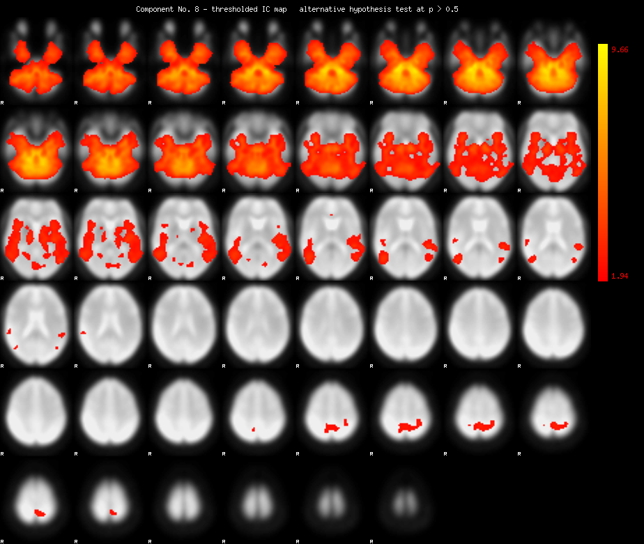
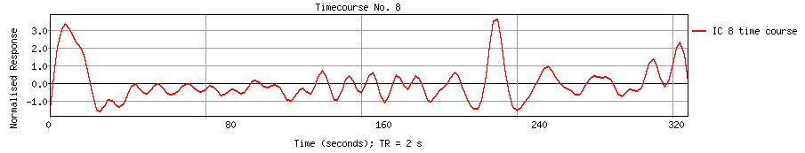
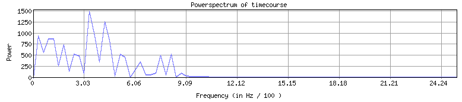
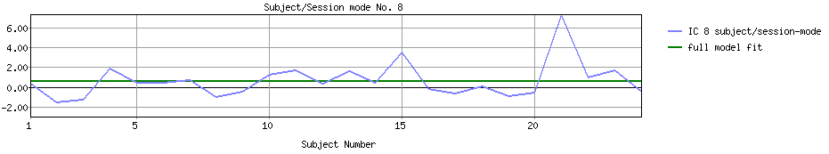
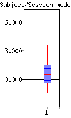

<
-
>
MELODIC Component 8
5.93 % of explained variance; 4.78 % of total variance

Temporal mode


Sessions/Subjects mode


GLM (OLS) on subject/session-mode
GLM β's
F-test on
full model fit
Contrasts
PE(1):
0.74
F = 3.70
dof1 = 1; dof2 = 22
p < 0.06754
(uncorrected for #comp.)
COPE(1):
COPE(2):
z =
z =
1.83 ;
-1.83 ;
p < 0.03377
p < 0.96623
This page produced automatically by
MELODIC
Version 3.10 - a part of
FSL - FMRIB Software Library
.